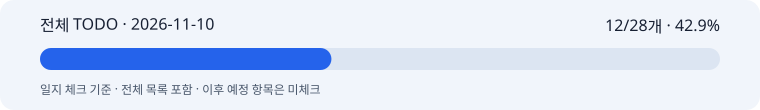

활성 범위 유지·당일 구현 근거 미확인 · 사후 기록일 2026-11-12
작업일: 2026-11-10 (KST) · 이름: 박지수 · 팀: 고급프로젝트 2팀.
기록일: 2026-11-12. 누락 일지의 사후 기록이며 원본 작업일·커밋일·기록일을 구분한다. 보고일 말까지 확인 가능한 자료만 사용하고 오늘의 성과를 과거 날짜에 넣지 않는다.
이미지 담당. 전후 날짜의 저장 기록을 구분하며 누락 일지를 보완한다.
확인한 뷰티 코드·공유 계획 이력과 날짜별 저장 보고서 범위에서는 11/10 당일 실행·게시 자료를 확정하지 못했다. 작업이 없었다는 뜻은 아니다.
11/09 저장 실험과 11/11 연출·타이포그래피 실험을 11/10 완료 성과로 옮기지 않았다. 활성 체크의 미확인 공동 항목도 유지한다.
활성 체크: 12/28개 · 42.9%. 이 수치는 일지 체크이며 코드/제품 전체 완성률이나 당일 자기평가가 아니다.
11/05 재분류 이후 현행 MVP·고도화7개·공동 검증/인수만 활성으로 센다. 과거·비적용·보류는 제외하며 전체 목록에 남긴 원문을 보존한다.
활성 체크: 12/28개 · 42.9%

전체 TODO · HTML 전체 목록 · 진행률 데이터 · 날짜별 근거
본인 자기평가: 미확정. 당일 0·25·50·75·100% 평가가 제공되지 않아 임의의 숫자를 만들지 않았다. 확인된 작업 결과는 2번에 적었으며 자동 TODO 비율로 대체하지 않는다.
기존 텍스트·서빙·이미지 계약을 유지하며 실제 차이만 맞추는 방향을 따르는 기록이다. 11/10에 새로운 요청을 보내거나 합의했다는 근거는 미확인이다.
작업일·커밋일·기록일을 나눠야 누락 보완 과정에서 잘못된 일별 성과를 만들지 않는다.
당일 목표·자기평가·실행 시각 자료가 없어 완료도와 신규 검증 수는 미확정이다.
M1 10/30·M2 11/06은 목표일 이력이다. 미확인 표본·합격 기준·청구·공동 인수는 완료로 처리하지 않는다.
당일 발표·시연·팀 전달의 완료 근거는 확인하지 못했다.
당시 후속 과제: 미확인 작업 증거를 찾아 연결하고 제품·배경·문구 배치와 실제 서비스 인수 항목을 따로 확인한다.